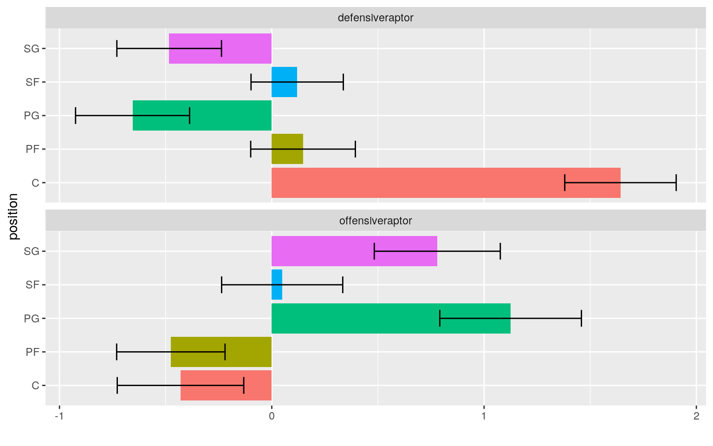
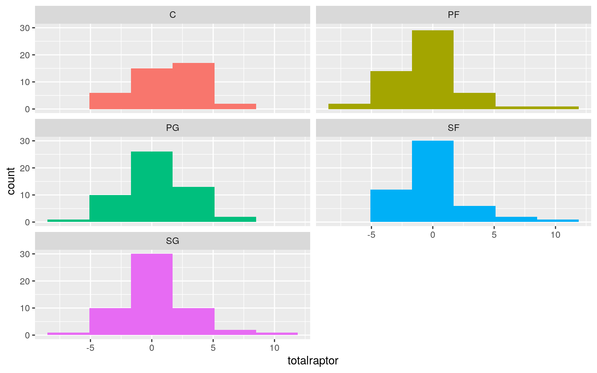
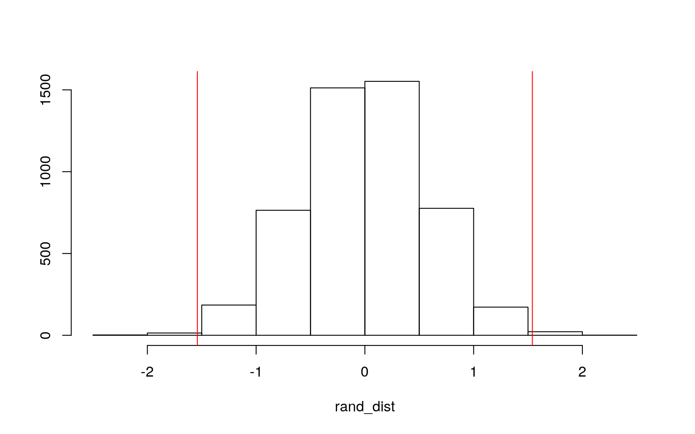
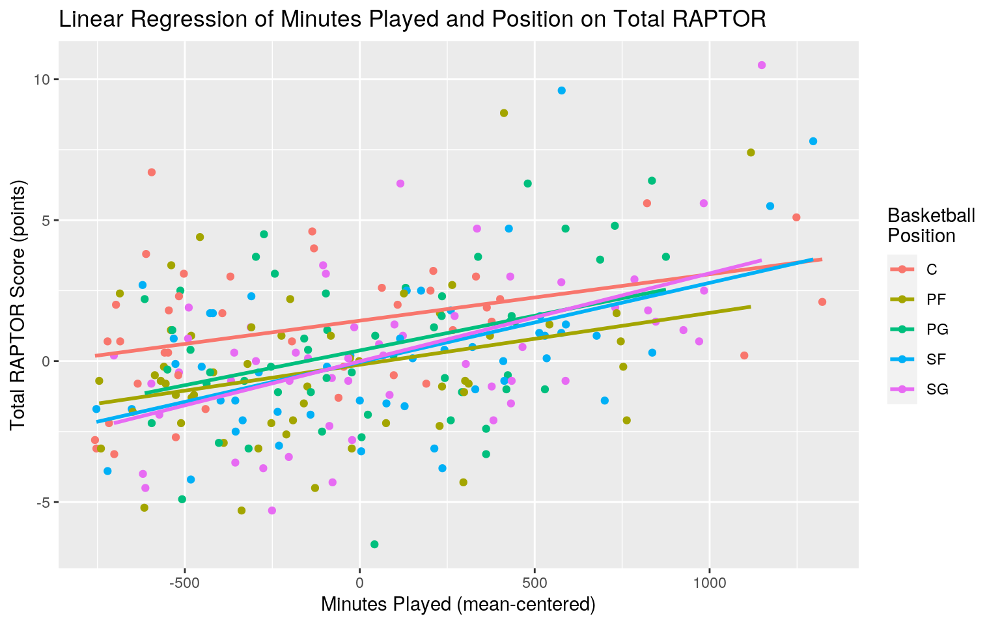
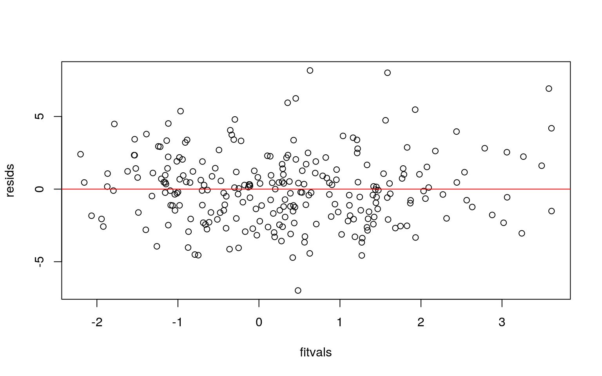
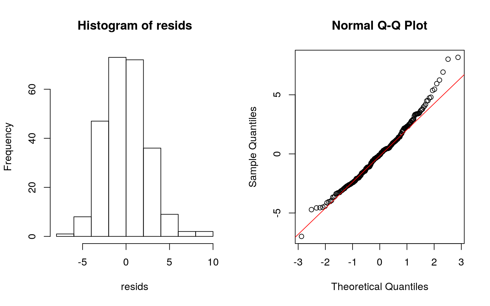
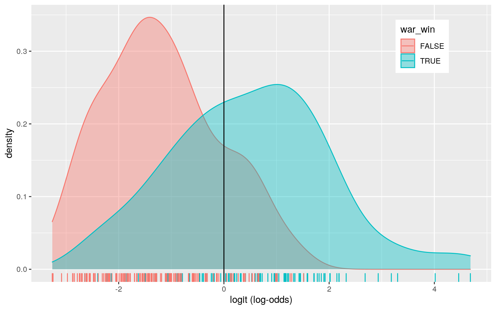
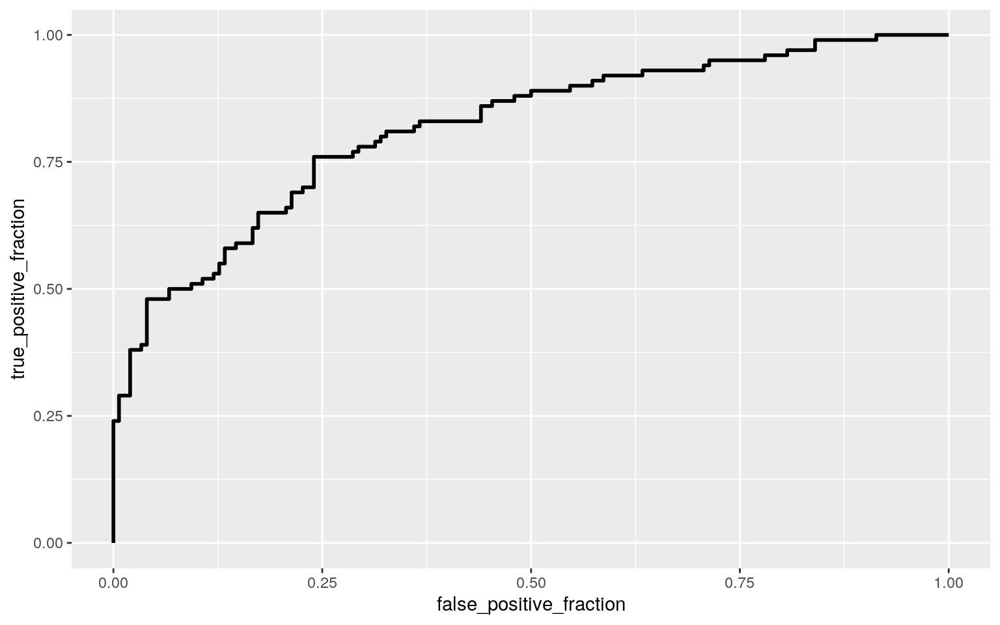

library(readr)
library(tidyverse)
library(dplyr)
library(ggplot2)
raptor <- read_csv("raptordata_positions.csv")
raptor <- raptor %>% select(-1,-6,-7,-8,-9,-10,-11)
raptor <- raptor %>% mutate(war_win = case_when(war > 3 ~ TRUE, war <= 3 ~ FALSE))#MANOVA Assumptions
library(rstatix)
group <- raptor$position
DVs <- raptor %>% select(offensiveraptor,defensiveraptor,totalraptor,minutes,war)
sapply(split(DVs,group), mshapiro_test)## C PF PG SF SG
## statistic 0.7726174 0.5836122 0.8474224 0.6106893
0.5788483
## p.value 1.908631e-06 5.097607e-11 9.403295e-06
2.174422e-10 3.350227e-11# Multivariate normality assumption is not met for any group!
box_m(DVs, group)## # A tibble: 1 x 4
## statistic p.value parameter method
## <dbl> <dbl> <dbl> <chr>
## 1 84.8 0.0193 60 Box's M-test for Homogeneity of
Covariance Matrices# Homogeneity of covariance matrices assumption is not met!
#Actual MANOVA test
man1 <- manova(cbind(offensiveraptor,defensiveraptor,totalraptor,minutes,war)~position, data=raptor)
summary(man1)## Df Pillai approx F num Df den Df Pr(>F)
## position 4 0.26426 3.452 20 976 4.962e-07 ***
## Residuals 245
## ---
## Signif. codes: 0 '***' 0.001 '**' 0.01 '*' 0.05 '.' 0.1
' ' 1summary.aov(man1)## Response offensiveraptor :
## Df Sum Sq Mean Sq F value Pr(>F)
## position 4 103.4 25.8493 5.9041 0.0001496 ***
## Residuals 245 1072.7 4.3782
## ---
## Signif. codes: 0 '***' 0.001 '**' 0.01 '*' 0.05 '.' 0.1
' ' 1
##
## Response defensiveraptor :
## Df Sum Sq Mean Sq F value Pr(>F)
## position 4 143.26 35.815 11.539 1.342e-08 ***
## Residuals 245 760.47 3.104
## ---
## Signif. codes: 0 '***' 0.001 '**' 0.01 '*' 0.05 '.' 0.1
' ' 1
##
## Response totalraptor :
## Df Sum Sq Mean Sq F value Pr(>F)
## position 4 56.41 14.1024 1.9496 0.1029
## Residuals 245 1772.18 7.2334
##
## Response minutes :
## Df Sum Sq Mean Sq F value Pr(>F)
## position 4 2141010 535253 2.3402 0.05574 .
## Residuals 245 56036553 228721
## ---
## Signif. codes: 0 '***' 0.001 '**' 0.01 '*' 0.05 '.' 0.1
' ' 1
##
## Response war :
## Df Sum Sq Mean Sq F value Pr(>F)
## position 4 48.23 12.057 1.1361 0.3401
## Residuals 245 2600.07 10.613raptor %>% group_by(position) %>% summarize(mean(offensiveraptor), mean(defensiveraptor))## # A tibble: 5 x 3
## position `mean(offensiveraptor)` `mean(defensiveraptor)`
## <chr> <dbl> <dbl>
## 1 C -0.43 1.64
## 2 PF -0.475 0.147
## 3 PG 1.12 -0.656
## 4 SF 0.0490 0.120
## 5 SG 0.780 -0.483pairwise.t.test(raptor$offensiveraptor, raptor$position, p.adj="none")##
## Pairwise comparisons using t tests with pooled SD
##
## data: raptor$offensiveraptor and raptor$position
##
## C PF PG SF
## PF 0.91745 - - -
## PG 0.00049 0.00012 - -
## SF 0.27946 0.20249 0.00963 -
## SG 0.00601 0.00215 0.39641 0.07497
##
## P value adjustment method: nonepairwise.t.test(raptor$defensiveraptor, raptor$position, p.adj="none")##
## Pairwise comparisons using t tests with pooled SD
##
## data: raptor$defensiveraptor and raptor$position
##
## C PF PG SF
## PF 6.8e-05 - - -
## PG 2.3e-09 0.020 - -
## SF 5.8e-05 0.936 0.026 -
## SG 2.2e-08 0.065 0.615 0.081
##
## P value adjustment method: noneraptor %>% select(position, offensiveraptor, defensiveraptor) %>%
pivot_longer(-1,names_to='DV', values_to='measure') %>% ggplot(aes(position,measure,fill=position)) +
geom_bar(stat="summary")+geom_errorbar(stat="summary", width=.5) + facet_wrap(~DV, nrow=2) +
coord_flip() + ylab("") + theme(legend.position = "none")
#Type I error occurence probability for 26 tests (1 MANOVA, 5 ANOVA, 20 t-tests)
set.seed(348)
Type1Error <- replicate(5000,{
pvals <- NULL
for(i in 1:26){
samp1 <- rnorm(20,mean=0)
samp2 <- rnorm(20,mean=0)
pvals[i] <- t.test(samp1,samp2,var.eq=T)$p.val
}
sum(pvals<.05)
})
mean(Type1Error>0)## [1] 0.7436#Bonferroni Correction
0.05/26## [1] 0.001923077ggplot(raptor,aes(totalraptor,fill=position))+geom_histogram(bins=6.5)+
facet_wrap(~position,ncol=2)+theme(legend.position="none")
raptor %>% group_by(position) %>% summarize(mean(totalraptor))## # A tibble: 5 x 2
## position `mean(totalraptor)`
## <chr> <dbl>
## 1 C 1.22
## 2 PF -0.323
## 3 PG 0.467
## 4 SF 0.171
## 5 SG 0.2941.2175 - -0.3226415 #mean difference in totalraptor between C and PF is 1.5401## [1] 1.540142set.seed(1234)
rand_dist<-vector()
for(i in 1:5000){
new <- data.frame(totalraptor=sample(raptor$totalraptor), position=raptor$position)
rand_dist[i] <- mean(new[new$position == "C",]$totalraptor) - mean(new[new$position == "PF",]$totalraptor)}
{hist(rand_dist, main = "", ylab = ""); abline(v = c(-1.5401, 1.5401), col = "red")}
mean(rand_dist > 1.5401 | rand_dist < -1.5401)## [1] 0.0068t.test(data=raptor,totalraptor~position=="C" | position =="PF")##
## Welch Two Sample t-test
##
## data: totalraptor by position == "C" | position == "PF"
## t = -0.080118, df = 196.4, p-value = 0.9362
## alternative hypothesis: true difference in means is not
equal to 0
## 95 percent confidence interval:
## -0.7254178 0.6687779
## sample estimates:
## mean in group FALSE mean in group TRUE
## 0.3114650 0.3397849raptor$minutes_c <- raptor$minutes - mean(raptor$minutes)
fitraptor <- lm(totalraptor ~ position * minutes_c, data=raptor)
summary(fitraptor)##
## Call:
## lm(formula = totalraptor ~ position * minutes_c, data =
raptor)
##
## Residuals:
## Min 1Q Median 3Q Max
## -6.9824 -1.6631 -0.0862 1.3224 8.1697
##
## Coefficients:
## Estimate Std. Error t value Pr(>|t|)
## (Intercept) 1.4339621 0.3970815 3.611 0.000371 ***
## positionPF -1.5615281 0.5260036 -2.969 0.003294 **
## positionPG -1.0555716 0.5230465 -2.018 0.044691 *
## positionSF -1.4713725 0.5269527 -2.792 0.005656 **
## positionSG -1.4421443 0.5222887 -2.761 0.006204 **
## minutes_c 0.0016472 0.0006902 2.387 0.017781 *
## positionPF:minutes_c 0.0001917 0.0010142 0.189 0.850249
## positionPG:minutes_c 0.0008197 0.0010969 0.747 0.455621
## positionSF:minutes_c 0.0011672 0.0009937 1.175 0.241308
## positionSG:minutes_c 0.0014741 0.0009723 1.516 0.130826
## ---
## Signif. codes: 0 '***' 0.001 '**' 0.01 '*' 0.05 '.' 0.1
' ' 1
##
## Residual standard error: 2.445 on 240 degrees of freedom
## Multiple R-squared: 0.2154, Adjusted R-squared: 0.186
## F-statistic: 7.321 on 9 and 240 DF, p-value: 2.042e-09library(interactions)
raptor %>% ggplot(aes(minutes_c,totalraptor,color=position)) + geom_point() + geom_smooth(method="lm", se=F) + ggtitle("Linear Regression of Minutes Played and Position on Total RAPTOR") + xlab("Minutes Played (mean-centered)") + ylab("Total RAPTOR Score (points)") + labs(color="Basketball \nPosition")
#Assumptions for Linear Regression
resids<-fitraptor$residuals
fitvals<-fitraptor$fitted.values
plot(fitvals,resids); abline(h=0, col='red')
par(mfrow=c(1,2)); hist(resids); qqnorm(resids); qqline(resids, col='red')
library(sandwich)
library(lmtest)
bptest(fitraptor)##
## studentized Breusch-Pagan test
##
## data: fitraptor
## BP = 7.1906, df = 9, p-value = 0.6173#Recomputation of results with Robust Standard Errors
summary(fitraptor)##
## Call:
## lm(formula = totalraptor ~ position * minutes_c, data =
raptor)
##
## Residuals:
## Min 1Q Median 3Q Max
## -6.9824 -1.6631 -0.0862 1.3224 8.1697
##
## Coefficients:
## Estimate Std. Error t value Pr(>|t|)
## (Intercept) 1.4339621 0.3970815 3.611 0.000371 ***
## positionPF -1.5615281 0.5260036 -2.969 0.003294 **
## positionPG -1.0555716 0.5230465 -2.018 0.044691 *
## positionSF -1.4713725 0.5269527 -2.792 0.005656 **
## positionSG -1.4421443 0.5222887 -2.761 0.006204 **
## minutes_c 0.0016472 0.0006902 2.387 0.017781 *
## positionPF:minutes_c 0.0001917 0.0010142 0.189 0.850249
## positionPG:minutes_c 0.0008197 0.0010969 0.747 0.455621
## positionSF:minutes_c 0.0011672 0.0009937 1.175 0.241308
## positionSG:minutes_c 0.0014741 0.0009723 1.516 0.130826
## ---
## Signif. codes: 0 '***' 0.001 '**' 0.01 '*' 0.05 '.' 0.1
' ' 1
##
## Residual standard error: 2.445 on 240 degrees of freedom
## Multiple R-squared: 0.2154, Adjusted R-squared: 0.186
## F-statistic: 7.321 on 9 and 240 DF, p-value: 2.042e-09coeftest(fitraptor, vcov = vcovHC(fitraptor))##
## t test of coefficients:
##
## Estimate Std. Error t value Pr(>|t|)
## (Intercept) 1.43396209 0.36228344 3.9581 9.955e-05 ***
## positionPF -1.56152808 0.55035794 -2.8373 0.004939 **
## positionPG -1.05557161 0.51151278 -2.0636 0.040128 *
## positionSF -1.47137248 0.48667272 -3.0233 0.002771 **
## positionSG -1.44214428 0.48962417 -2.9454 0.003542 **
## minutes_c 0.00164716 0.00070524 2.3356 0.020336 *
## positionPF:minutes_c 0.00019169 0.00125572 0.1527
0.878799
## positionPG:minutes_c 0.00081970 0.00117887 0.6953
0.487522
## positionSF:minutes_c 0.00116724 0.00111212 1.0496
0.294978
## positionSG:minutes_c 0.00147410 0.00109802 1.3425
0.180697
## ---
## Signif. codes: 0 '***' 0.001 '**' 0.01 '*' 0.05 '.' 0.1
' ' 1fitraptor <- lm(totalraptor ~ position * minutes_c, data=raptor)
summary(fitraptor)##
## Call:
## lm(formula = totalraptor ~ position * minutes_c, data =
raptor)
##
## Residuals:
## Min 1Q Median 3Q Max
## -6.9824 -1.6631 -0.0862 1.3224 8.1697
##
## Coefficients:
## Estimate Std. Error t value Pr(>|t|)
## (Intercept) 1.4339621 0.3970815 3.611 0.000371 ***
## positionPF -1.5615281 0.5260036 -2.969 0.003294 **
## positionPG -1.0555716 0.5230465 -2.018 0.044691 *
## positionSF -1.4713725 0.5269527 -2.792 0.005656 **
## positionSG -1.4421443 0.5222887 -2.761 0.006204 **
## minutes_c 0.0016472 0.0006902 2.387 0.017781 *
## positionPF:minutes_c 0.0001917 0.0010142 0.189 0.850249
## positionPG:minutes_c 0.0008197 0.0010969 0.747 0.455621
## positionSF:minutes_c 0.0011672 0.0009937 1.175 0.241308
## positionSG:minutes_c 0.0014741 0.0009723 1.516 0.130826
## ---
## Signif. codes: 0 '***' 0.001 '**' 0.01 '*' 0.05 '.' 0.1
' ' 1
##
## Residual standard error: 2.445 on 240 degrees of freedom
## Multiple R-squared: 0.2154, Adjusted R-squared: 0.186
## F-statistic: 7.321 on 9 and 240 DF, p-value: 2.042e-09#Recomputation of results with Bootstrapped Standard Errors - resampling residuals
fit1 <- lm(totalraptor ~ position * minutes_c, data = raptor)
resids1 <- fit1$residuals
fitted1 <- fit1$fitted.values
resid_resamp <- replicate(500,{
new_resids <- sample(resids1,replace=TRUE)
raptor$new_y <- fitted1 + new_resids
fit1 <- lm(new_y ~ position * minutes_c, data = raptor)
coef(fit1)
})
resid_resamp %>% t %>% as.data.frame %>% summarize_all(sd)## (Intercept) positionPF positionPG positionSF positionSG
minutes_c positionPF:minutes_c
## 1 0.3649175 0.4830274 0.4826179 0.492442 0.4772472
0.0006522599 0.001004325
## positionPG:minutes_c positionSF:minutes_c
positionSG:minutes_c
## 1 0.001064845 0.0009439956 0.0009359066resid_resamp %>% t %>% as.data.frame %>% pivot_longer(1:10) %>% group_by(name) %>% summarize(lower=quantile(value,.025), upper=quantile(value,.975))## # A tibble: 10 x 3
## name lower upper
## <chr> <dbl> <dbl>
## 1 (Intercept) 0.640 2.12
## 2 minutes_c 0.000357 0.00294
## 3 positionPF -2.48 -0.543
## 4 positionPF:minutes_c -0.00178 0.00213
## 5 positionPG -1.94 -0.0956
## 6 positionPG:minutes_c -0.00120 0.00289
## 7 positionSF -2.35 -0.378
## 8 positionSF:minutes_c -0.000737 0.00290
## 9 positionSG -2.35 -0.544
## 10 positionSG:minutes_c -0.000286 0.00336library(tidyverse)
library(lmtest)
class_diag<-function(probs,truth){
tab<-table(factor(probs>.5,levels=c("FALSE","TRUE")),truth)
acc=sum(diag(tab))/sum(tab)
sens=tab[2,2]/colSums(tab)[2]
spec=tab[1,1]/colSums(tab)[1]
ppv=tab[2,2]/rowSums(tab)[2]
f1=2*(sens*ppv)/(sens+ppv)
if(is.numeric(truth)==FALSE & is.logical(truth)==FALSE){
truth<-as.numeric(truth)-1}
#CALCULATE EXACT AUC
ord<-order(probs, decreasing=TRUE)
probs <- probs[ord]; truth <- truth[ord]
TPR=cumsum(truth)/max(1,sum(truth))
FPR=cumsum(!truth)/max(1,sum(!truth))
dup<-c(probs[-1]>=probs[-length(probs)], FALSE)
TPR<-c(0,TPR[!dup],1); FPR<-c(0,FPR[!dup],1)
n <- length(TPR)
auc<- sum( ((TPR[-1]+TPR[-n])/2) * (FPR[-1]-FPR[-n]) )
data.frame(acc,sens,spec,ppv,f1,auc)
}
raptordata <- raptor %>% mutate(y=ifelse(war_win==TRUE,1,0))
head(raptordata)## # A tibble: 6 x 11
## player team position minutes offensiveraptor
defensiveraptor totalraptor war war_win minutes_c
## <chr> <chr> <chr> <dbl> <dbl> <dbl> <dbl> <dbl> <lgl>
<dbl>
## 1 James… Rock… SG 2931 8.5 2 10.5 19.8 TRUE 1149.
## 2 Kawhi… Clip… SF 2359 6.4 3.3 9.6 14.9 TRUE 577.
## 3 Giann… Bucks PF 2194 5.3 3.4 8.8 13.1 TRUE 412.
## 4 LeBro… Lake… SF 3078 6.5 1.3 7.8 16.8 TRUE 1296.
## 5 Antho… Lake… PF 2900 3.1 4.3 7.4 15.5 TRUE 1118.
## 6 Karl-… Timb… C 1187 5.8 0.9 6.7 5.8 TRUE -595.
## # … with 1 more variable: y <dbl>fitrap <- glm(y~position+minutes_c, data=raptordata, family="binomial")
coeftest(fitrap)##
## z test of coefficients:
##
## Estimate Std. Error z value Pr(>|z|)
## (Intercept) 0.71958411 0.39992070 1.7993 0.071969 .
## positionPF -1.74892809 0.55063959 -3.1762 0.001492 **
## positionPG -1.32422555 0.52525745 -2.5211 0.011699 *
## positionSF -1.30507939 0.53630446 -2.4335 0.014955 *
## positionSG -1.48165383 0.53656239 -2.7614 0.005756 **
## minutes_c 0.00299895 0.00041193 7.2802 3.333e-13 ***
## ---
## Signif. codes: 0 '***' 0.001 '**' 0.01 '*' 0.05 '.' 0.1
' ' 1exp(coef(fitrap))## (Intercept) positionPF positionPG positionSF positionSG
minutes_c
## 2.0535790 0.1739603 0.2660089 0.2711510 0.2272615
1.0030035coef(fitrap) %>% exp %>% round(5) %>% data.frame## .
## (Intercept) 2.05358
## positionPF 0.17396
## positionPG 0.26601
## positionSF 0.27115
## positionSG 0.22726
## minutes_c 1.00300prob <- predict(fitrap,type="response")
pred <- ifelse(prob>.5,1,0)
table(predict=as.numeric(prob>.5),truth=raptordata$y) %>% addmargins## truth
## predict 0 1 Sum
## 0 124 36 160
## 1 26 64 90
## Sum 150 100 250class_diag(prob,raptordata$war_win)## acc sens spec ppv f1 auc
## TRUE 0.752 0.64 0.8266667 0.7111111 0.6736842 0.8164667raptordata$logit<-predict(fitrap,type="link") #get predicted logit/log-odds for everyone
raptordata %>% ggplot() + geom_density(aes(logit,color=war_win,fill=war_win), alpha=.4) + theme(legend.position=c(.85,.85)) + geom_vline(xintercept=0) + xlab("logit (log-odds)") + geom_rug(aes(logit,color=war_win))
library(plotROC)
ROCplot <- ggplot(raptordata)+geom_roc(aes(d=war_win,m=prob), n.cuts=0)
ROCplot
calc_auc(ROCplot)## PANEL group AUC
## 1 1 -1 0.8164667fitrap2 <- glm(y~offensiveraptor+defensiveraptor+totalraptor+team, data = raptordata, family = "binomial")
coeftest(fitrap2)##
## z test of coefficients:
##
## Estimate Std. Error z value Pr(>|z|)
## (Intercept) -2.021876 1.158604 -1.7451 0.0809681 .
## offensiveraptor 2.927102 8.539435 0.3428 0.7317680
## defensiveraptor 2.179192 8.484381 0.2568 0.7972965
## totalraptor 2.450062 8.584041 0.2854 0.7753219
## teamBucks -0.791901 2.451574 -0.3230 0.7466821
## teamBulls -3.711147 6.519011 -0.5693 0.5691657
## teamCavaliers -20.219779 2441.503252 -0.0083 0.9933922
## teamCeltics -2.505768 1.985531 -1.2620 0.2069438
## teamClippers -0.951564 4.614681 -0.2062 0.8366318
## teamGrizzlies -9.470435 2.786239 -3.3990 0.0006763 ***
## teamHawks -3.962557 35.609834 -0.1113 0.9113967
## teamHeat -0.038922 3.061343 -0.0127 0.9898560
## teamHornets 1.717298 45.907859 0.0374 0.9701601
## teamJazz -0.728880 2.839941 -0.2567 0.7974465
## teamKings -4.117383 1.860468 -2.2131 0.0268914 *
## teamKnicks -8.253407 7.368334 -1.1201 0.2626633
## teamLakers -4.450137 3.568458 -1.2471 0.2123698
## teamMagic 2.889403 3.441109 0.8397 0.4010922
## teamMavericks -2.391647 1.580503 -1.5132 0.1302241
## teamNets -5.435685 2.186363 -2.4862 0.0129124 *
## teamNuggets 1.453743 3.854004 0.3772 0.7060226
## teamPacers -1.730182 1.665816 -1.0386 0.2989726
## teamPelicans -0.242248 1.975506 -0.1226 0.9024035
## teamPistons -10.851811 65.618986 -0.1654 0.8686480
## teamRaptors -0.012034 1.657685 -0.0073 0.9942079
## teamRockets 2.272192 1.968110 1.1545 0.2482933
## teamSpurs 0.592412 1.952719 0.3034 0.7616018
## teamSuns -5.322217 2.205350 -2.4133 0.0158079 *
## teamThunder -0.870448 3.186129 -0.2732 0.7847000
## teamTimberwolves -14.845579 4806.210505 -0.0031
0.9975355
## teamTrail Blazers -0.739264 2.726292 -0.2712 0.7862671
## teamWarriors -16.260535 3118.684185 -0.0052 0.9958399
## teamWizards -4.994335 6.062081 -0.8239 0.4100164
## ---
## Signif. codes: 0 '***' 0.001 '**' 0.01 '*' 0.05 '.' 0.1
' ' 1exp(coef(fitrap2))## (Intercept) offensiveraptor defensiveraptor totalraptor
teamBucks
## 1.324068e-01 1.867344e+01 8.839163e+00 1.158907e+01
4.529828e-01
## teamBulls teamCavaliers teamCeltics teamClippers
teamGrizzlies
## 2.444947e-02 1.654480e-09 8.161288e-02 3.861366e-01
7.709787e-05
## teamHawks teamHeat teamHornets teamJazz teamKings
## 1.901443e-02 9.618259e-01 5.569461e+00 4.824490e-01
1.628708e-02
## teamKnicks teamLakers teamMagic teamMavericks teamNets
## 2.603700e-04 1.167697e-02 1.798258e+01 9.147892e-02
4.358248e-03
## teamNuggets teamPacers teamPelicans teamPistons
teamRaptors
## 4.279100e+00 1.772522e-01 7.848618e-01 1.936949e-05
9.880383e-01
## teamRockets teamSpurs teamSuns teamThunder
teamTimberwolves
## 9.700644e+00 1.808345e+00 4.881920e-03 4.187638e-01
3.569825e-07
## teamTrail Blazers teamWarriors teamWizards
## 4.774650e-01 8.672400e-08 6.776224e-03coef(fitrap2) %>% exp %>% data.frame## .
## (Intercept) 1.324068e-01
## offensiveraptor 1.867344e+01
## defensiveraptor 8.839163e+00
## totalraptor 1.158907e+01
## teamBucks 4.529828e-01
## teamBulls 2.444947e-02
## teamCavaliers 1.654480e-09
## teamCeltics 8.161288e-02
## teamClippers 3.861366e-01
## teamGrizzlies 7.709787e-05
## teamHawks 1.901443e-02
## teamHeat 9.618259e-01
## teamHornets 5.569461e+00
## teamJazz 4.824490e-01
## teamKings 1.628708e-02
## teamKnicks 2.603700e-04
## teamLakers 1.167697e-02
## teamMagic 1.798258e+01
## teamMavericks 9.147892e-02
## teamNets 4.358248e-03
## teamNuggets 4.279100e+00
## teamPacers 1.772522e-01
## teamPelicans 7.848618e-01
## teamPistons 1.936949e-05
## teamRaptors 9.880383e-01
## teamRockets 9.700644e+00
## teamSpurs 1.808345e+00
## teamSuns 4.881920e-03
## teamThunder 4.187638e-01
## teamTimberwolves 3.569825e-07
## teamTrail Blazers 4.774650e-01
## teamWarriors 8.672400e-08
## teamWizards 6.776224e-03prob2 <- predict(fitrap2,type="response")
table(predict=as.numeric(prob2>.5),truth=raptordata$y) %>% addmargins## truth
## predict 0 1 Sum
## 0 146 4 150
## 1 4 96 100
## Sum 150 100 250class_diag(prob2,raptordata$y)## acc sens spec ppv f1 auc
## 1 0.968 0.96 0.9733333 0.96 0.96 0.9933333set.seed(1234)
k=10
data<-raptordata[sample(nrow(raptordata)),]
folds<-cut(seq(1:nrow(raptordata)),breaks=k,labels=F)
diags<-NULL
for(i in 1:k){
train<-data[folds!=i,]
test<-data[folds==i,]
truth<-test$y
fitrap2<-glm(y~offensiveraptor+defensiveraptor+totalraptor+team, data = train, family = "binomial")
prob<-predict(fitrap2,newdata = test,type="response")
diags<-rbind(diags,class_diag(prob,truth))
}
summarize_all(diags,mean)## acc sens spec ppv f1 auc
## 1 0.856 0.8087388 0.8902194 0.8216034 0.8081496 0.940332library(glmnet)
library(dplyr)
set.seed(1234)
rap_preds <- model.matrix(y~offensiveraptor+defensiveraptor+totalraptor+team, data = raptordata)[,-1]
rap_preds <- scale(rap_preds)
y <- as.matrix(raptordata$y)
cv <- cv.glmnet(rap_preds, y, family="binomial")
lasso_fit <- glmnet(rap_preds, y, family="binomial", lambda = cv$lambda.1se)
coef(lasso_fit)## 33 x 1 sparse Matrix of class "dgCMatrix"
## s0
## (Intercept) -0.724818094
## offensiveraptor 0.272905731
## defensiveraptor .
## totalraptor 3.443918296
## teamBucks .
## teamBulls .
## teamCavaliers .
## teamCeltics .
## teamClippers .
## teamGrizzlies -0.250682159
## teamHawks .
## teamHeat .
## teamHornets .
## teamJazz .
## teamKings .
## teamKnicks .
## teamLakers .
## teamMagic .
## teamMavericks .
## teamNets .
## teamNuggets .
## teamPacers .
## teamPelicans .
## teamPistons .
## teamRaptors 0.001437606
## teamRockets .
## teamSpurs .
## teamSuns .
## teamThunder .
## teamTimberwolves .
## teamTrail Blazers .
## teamWarriors .
## teamWizards .prob3 <- predict(lasso_fit, rap_preds, type="response")
class_diag(prob3,raptordata$y)## acc sens spec ppv f1 auc
## 1 0.92 0.89 0.94 0.9081633 0.8989899 0.979table(predict=as.numeric(prob3>.5),truth=raptordata$y) %>% addmargins## truth
## predict 0 1 Sum
## 0 141 11 152
## 1 9 89 98
## Sum 150 100 250rap_preds2 <- model.matrix(y~offensiveraptor+defensiveraptor+totalraptor+team, data = raptordata)[,-1]
raptor1 <- data.frame(rap_preds2, y = raptordata$y)
set.seed(1234)
k=10
data<-raptor1[sample(nrow(raptor1)),]
folds<-cut(seq(1:nrow(raptor1)),breaks=k,labels=F)
diags<-NULL
for(i in 1:k){
train<-data[folds!=i,]
test<-data[folds==i,]
truth<-test$y
fitrap3<-glm(y~offensiveraptor+totalraptor+teamGrizzlies+teamRaptors, data = train, family = "binomial")
prob <- predict(fitrap3, newdata = test, type="response")
diags<-rbind(diags,class_diag(prob,truth))
}
summarize_all(diags,mean)## acc sens spec ppv f1 auc
## 1 0.92 0.8965501 0.9320355 0.8743182 0.8833348 0.9716168